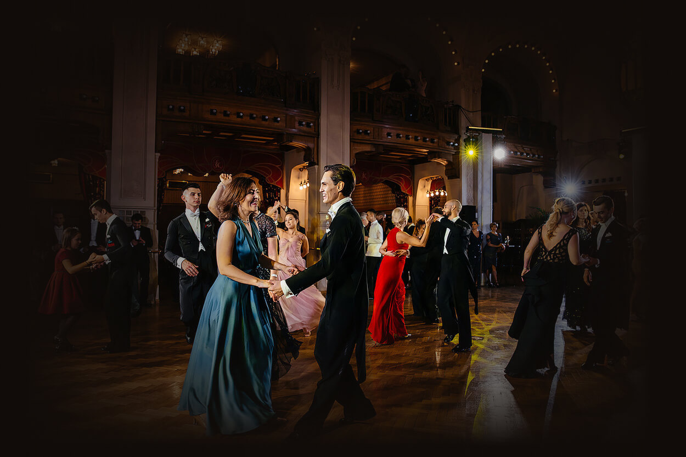

A
Для семьи и близких
Частный бал
Свадьба, юбилей, день рождения
Событие, за которым стоит целая история семьи. Бал становится той редкой и бесценной возможностью собрать вместе несколько поколений близких людей и подарить им вечер, который останется в памяти на годы.